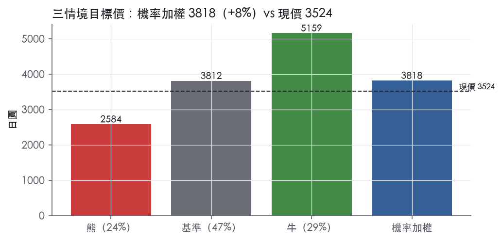
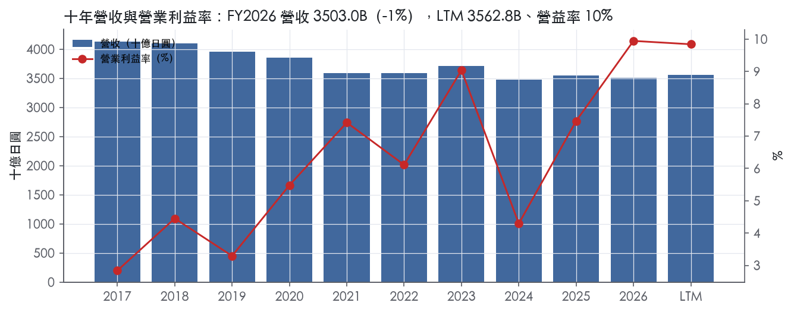
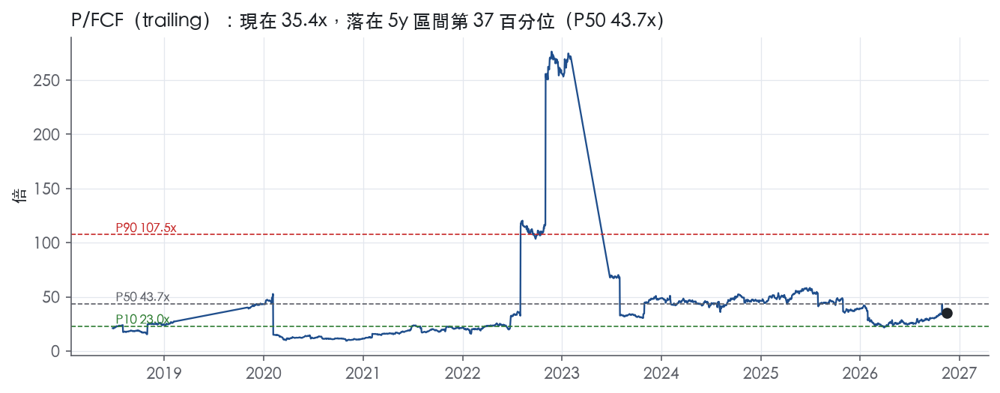
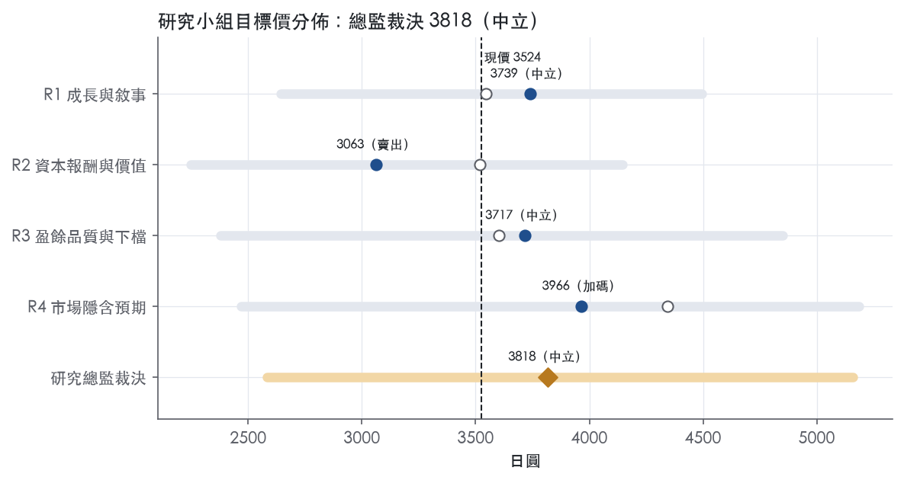
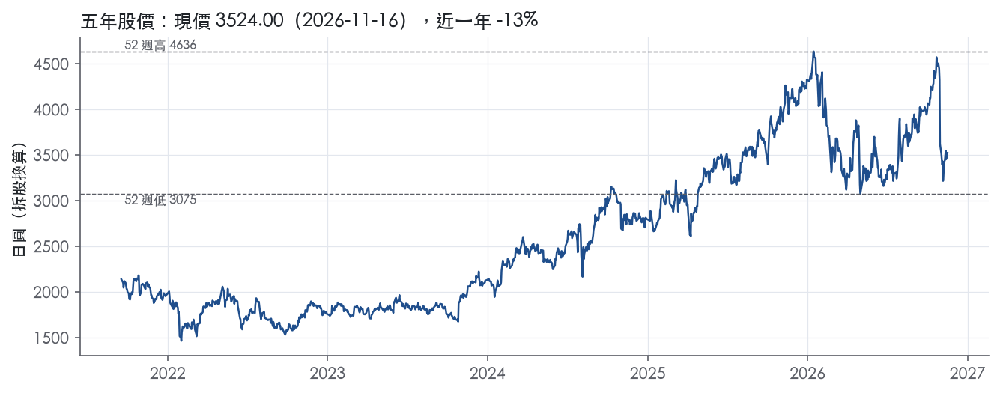

評等總表 › 未分類 › 6702.T
計畫難全達但淨現金撐底，溫和看多｜評等 中立｜目標價 3818
| 報告日 | 評等 | 目標價 | 當時股價 | 超額報酬 |
|---|---|---|---|---|
| 2026-11-16 | 中立 | 3,818 | 3,524 | +2.2% |
| 評等 | 中立（邊界，鄰近加碼） |
| 12 個月目標價 | 3818 日圓 |
| 現價 | 3524.00 日圓（2026-11-16） |
| 預期報酬 | 股價 +8.3%＋股息 1.7%＝總報酬 +10.0%；日股門檻 7.8%，超額 +2.2% |
| 估值方法 | P/FCF 22.0x，套在第 5–8 季的自由現金流（也就是一年後的未來四季） |
| 三情境 | 熊 2584／基準 3812／牛 5159 |
| 研究流程 | 四位研究員兩輪辯論＋研究總監裁決 |
| 資料來源 | EDINET、TDnet、J-Quants、Yahoo、FRED（全免費） |
計畫難全達但淨現金撐底，溫和看多（研究總監裁決，四位研究員兩輪辯論後）
評等 中立（邊界，鄰近加碼）｜12 個月目標價 3818 日圓（總監三情境機率加權 3908 與研究員中位數 3728 各半）｜現價 3524.00（2026-11-16）
預期報酬：股價 +8.3%＋股息 1.7%＝總報酬 +10.0%。日股門檻 7.8%，超額 +2.2%，離加碼的分界不到三個百分點，屬邊界評等（落在其他級距的機率約三成）。
估值方法：P/FCF 22.0x，套在第 5–8 季的自由現金流（也就是一年後的未來四季）。三情境：熊 2584（24%）／基準 3812（47%）／牛 5159（29%）。
立場看多而評等中立：評等看的是「預期總報酬 10.0% − 日股門檻 7.8%」＝超額 2.2%，不是絕對漲跌；看多但超額不足，代表上檔已被同業的預期報酬抵銷。
什麼會讓研究總監改變看法：2027-01 下旬的 Q3 決算短信若下修 415.00B、揭露不採算金額或存貨未回落，轉中性並把倍數退到市場持平 21x；若毛利增幅超過營收且契約資產轉為營業 CF，倍數上調至 24x。
| 過去四季（實際，FY2027Q2） | 未來四季 | 第 5–8 季 | 第 9–12 季 | |
|---|---|---|---|---|
| 營收（B） | 3,562.8B | 3,687.5B | 3,816.5B | 3,969.2B |
| 營收成長 | -0.0% | 3.5% | 3.5% | 4.0% |
| 營業利益率 | 9.8% | 10.2% | 10.6% | 11.0% |
| EPS（日圓） | 154.46 | 164.31 | 179.03 | 195.76 |
| EPS 成長 | -37.8% | 6.4% | 9.0% | 9.3% |
| 每股股息（日圓） | — | 0.00 | 0.00 | 0.00 |
| P/E（現價） | 22.8x | 21.4x | 19.7x | 18.0x |
| 股息殖利率（現價） | 1.7% | — | — | — |
過去四季為申報數字；預測為研究總監的假設、程式計算。倍數與殖利率都用現價計算，用來看現價對應各期獲利的高低。
| 情境 | 機率（歷史） | 故事 | 未來四季營收成長 | 第 5–8 季營益率 | 倍數 | 目標價 | 股價漲跌 |
|---|---|---|---|---|---|---|---|
| 熊 | 24%（22%） | 對應風險表第 1 條與第 3 條：Q3 短信下修 415.00B、不採算提列與系統品質問題浮現、存貨與契約資產未轉回；淨現金完好，損失在估值不在償債 | 1.0% | 8.8% | 19.0x | 2584 | -26.7% |
| 基準 | 47%（49%） | FY2027 營業利益略低於 415.00B，Uvance 佔比擴張使利潤率逐年改善，買回維持 H1 步調，倍數略高於市場持平 | 3.5% | 10.6% | 22.0x | 3812 | 8.2% |
| 牛 | 29%（29%） | 下半年驗收集中達成 415.00B，FY2028 計畫延續毛利率每年 +2pp，淨現金加碼買回回到 FY2026 規模 | 4.5% | 11.6% | 26.0x | 5159 | 46.4% |
目標價由程式依研究總監的驅動與倍數計算；機率由研究總監給定。括號內是歷史頻率：把這檔股票過去十年 12 個月報酬的波動形狀，置中在基準情境，結果落在各情境附近的比例。

四位研究員用不同方法各自估值，回應研究總監的質疑後交出第二輪，最後由總監逐點裁決。各研究員的主張見第七章，裁決理由見第八章，完整論證見《研究底稿》。
| 立場（一輪→二輪） | 加權目標價（一輪→二輪） | 評等（一輪→二輪） | 第二輪倍數 | 熊～牛目標價 | |
|---|---|---|---|---|---|
| R1 成長與敘事 | 中性→中性 | 3546→3739 | 減碼→中立 | 22.0x | 2641～4493 |
| R2 資本報酬與價值 | 中性→看空 | 3519→3063 | 減碼→賣出 | 14.5x | 2248～4145 |
| R3 盈餘品質與下檔 | 中性→中性 | 3602→3717 | 中立→中立 | 22.0x | 2379～4849 |
| R4 市場隱含預期 | 看多→看多 | 4343→3966 | 買進→加碼 | 22.0x | 2468～5186 |
| 研究總監裁決 | 看多 | 3818 | 中立 | 22.0x | 2584～5159 |
目標價由程式依各自的驅動與倍數計算；評等＝機率加權總報酬 − 日股門檻。
富士通是一家以日本市場為根基、正把自己從傳統系統整合商轉型為「AI驅動＋跨產業數位服務」公司的科技集團。公司及245家子公司（其中224家為合併子公司）在包含日本的全球各地展開事業，提供全球性的數位服務。集團的事業系統橫跨顧問、雲端、系統整合、軟體、BPO與IT維運等服務型業務，同時仍保有伺服器、儲存、通訊基礎設施與PC等硬體業務。客戶基礎覆蓋全產業領域及公共部門，公司自己強調「顧客基盤涵蓋包含公共分野之全產業分野，50年以上參與業務應用開發與運維」。簡言之，富士通賣的不是單一產品，而是把既有的龐大企業/政府IT存量客戶，逐步轉包成雲端化、模組化、AI化的訂閱型服務。
富士通目前的報告分部為「サービスソリューション（服務解決方案）」、「ハードウェアソリューション（硬體解決方案）」、「ユビキタスソリューション（PC）」三個，原有的「デバイスソリューション」已自前一會計年度起分類為非繼續事業。服務解決方案是以Uvance品牌為核心的全球共通價值服務，依產業軸分為「Enterprise（汽車、製造、流通零售等）」與「Public（官公廳、國防、金融、醫療等）」兩大類；硬體解決方案由「システムプロダクト」（伺服器、儲存、主機及前端技術）與「ネットワークプロダクト」（行動基地台、光傳輸系統等通訊基礎設施）構成；ユビキタスソリューション僅為PC業務。
規模上，以FY2026上半年（2025年4月至9月）外部收益計算，服務解決方案約1,051.03B、硬體解決方案約388.03B，相較當期合併營收1,566.54B，服務解決方案占比約七成、硬體解決方案約二成五，其餘為PC及消去項。公司為強化硬體業務的全球競爭力，2024年4月成立「エフサステクノロジーズ」承接伺服器與儲存事業，採產銷一體後已改善硬體解決方案分部的採算性；2025年7月再成立「1FINITY」承接光傳輸與行動系統等網路產品事業。
成長引擎集中在服務解決方案內部的Uvance：2025年度（即本報告定義之FY2026）Uvance銷售收益達709.3B，高於年初計畫的700.0B，較前一年度（FY2025）的482.8B成長47%；Uvance占服務解決方案整體銷售收益的比重從FY2025的21%擴大到FY2026的30%。Uvance內部的Vertical領域（以數據與AI為主）成長強勁，占Uvance整體銷售收益比重已超過四成。另一個拉動服務業務的次引擎是舊系統現代化（モダナイゼーション）業務，FY2026銷售收益較前期成長24%，達成年初計畫。研發費用總額137.3B，其中服務解決方案26.4B、硬體解決方案58.6B、全社及消去項52.2B；設備投資50.3B，較前期減少2.3%，服務解決方案中以資料中心為主的投資為17.2B。
富士通的客戶結構以日本國內公共部門與大型企業為核心，海外則依賴子公司通路，且近年海外業務的重點是提升獲利率而非單純衝規模。子公司「富士通Japan」專責自治體、醫療、教育機構及民需領域的解決方案，其銷售收益占合併銷售收益超過10%，單獨損益為銷售收益461.0B、經常利益62.1B、當期淨利43.4B。海外業務以「Regions（海外）」分部呈現，FY2026銷售收益575.2B，較FY2025下滑約2.5%，但受惠於事業組合變革與結構改革，營業利益率由FY2025的4.1%改善至FY2026的5.9%；公司明確表示將在全區域持續提升收益性，並以Uvance為核心擴大服務型業務在海外的占比。
通路面，富士通在歐洲、北美、澳洲、新加坡、德國等地透過Fujitsu Europe Holding B.V.（原Fujitsu Technology Solutions (Holding) B.V.，2025年10月更名）、Fujitsu North America、Fujitsu Australia、Fujitsu Asia Pte.、GK Software SE等子公司，向當地企業客戶提供顧問、系統建構、維運及軟體產品。另一個客戶／夥伴關係的觀察指標是政策保有股（交叉持股）：公司持有的上市特定投資股票含豐田通商、Aeon、富士電機、ＦＤＫ、DAIKO XTECH等，多為服務解決方案的營業往來對象，目的在維持交易關係而非純投資。本會計年度內公司賣出8個政策保有股標的，上市股票帳面計入額仍增至36.36B、未上市股票增至49.99B；在東證要求改善資本效率的壓力下，這類交叉持股的逐步處分方向符合市場對日股資本紀律的普遍期待，但處分速度看起來仍偏溫和。
過去四個季度（FY2026Q3至FY2027Q2），富士通的營收走勢呈現明顯的「下半年（曆年Q1、Q2對日本財年是Q4、Q1）強、上半年弱」的季節性，且與一次性業外利得脫鉤後的本業利潤率仍在逐季修復。FY2026Q3（2025年10–12月）營收884.64B，年減17.3%，營益率11.9%（is/dv 資料包）。FY2026Q4（2026年1–3月，年度收尾季）營收回升至1,051.79B，年增13.3%，營益率13.1%，為近八季最高（dv 資料包）。FY2027Q1（2026年4–6月，新財年第一季）營收779.38B，年增3.9%，但營益率回落至6.7%（dv 資料包）。FY2027Q2（2026年7–9月）營收846.98B，年增3.7%，營益率6.5%（dv 資料包）。
以決算短信揭露的累計數字看，FY2027上半年（2026年4月至9月）繼續事業銷售收益1,626,358百萬円（1,626.36B），高於去年同期的1,566,542百萬円（1,566.54B）；營業利益107,602百萬円（107.6B），高於去年同期的105,345百萬円（105.3B）；但歸屬母公司中間利益82,581百萬円（82.58B），遠低於去年同期的262,002百萬円（262.0B）。這個利潤的大幅下滑主要是因為去年同期含有非繼續事業（新光電氣、FDK等事業剝離）的146,341百萬円獲利，本期已無此一次性貢獻。現金及約當現金從FY2026期末的450,366百萬円（450.37B）降至中間期末的413,389百萬円（413.39B），主因上半年自己股買回支出32,832百萬円（32.8B）與配息支出60,717百萬円（60.7B）。公司公布的FY2027全年業績予想為營業利益415.00B、歸屬母公司淨利310.00B、每股盈餘182.43日圓；以上半年營業利益107.6B對照全年計畫415.00B，僅達成約26%，意味下半年必須重現FY2026同期「Q3加速、Q4衝量」的季節性才能達標，這是本季指引中最需要盯的執行風險。
公司把自身存在意義定義為「以創新為社會帶來信賴，讓世界更可持續」，並圍繞地球環境、數位社會發展、人們福祉三大重點領域推動經營。過去三年（FY2024–FY2026，公司稱2023–2025年度）的中期經營計畫圍繞四個重點戰略：事業模式／投資組合戰略（以Uvance擴大服務業務、強化硬體業務根基）、顧客成功戰略／地域戰略（推動現代化業務與海外事業變革）、技術戰略（AI與運算能力的核心技術強化）、資源戰略（與事業連動的人才組合轉型）。公司表示調整後營業利益已連續4期創歷史新高，核心自由現金流較FY2022起點成長1.8倍，整體自由現金流則因非核心事業（新光電氣、富士通General即現在的General、FDK）的切割退出而成長2.7倍。
展望方面，公司宣布自FY2027起放棄傳統的三年中期計畫模式，改以「2035年度為目標的十年期中長期經營願景」取代，理由是外部環境變化過快，三年計畫容易與現實脫節。三大聚焦領域為「Sovereign Platform」（主權級高效能運算）、「Physical AI」（機器人與人協作的自律進化系統）、「Intelligent Society」（大規模數據與數位孿生分析）。FY2027的具體施策包括服務解決方案持續以Uvance與現代化業務為成長引擎、管理架構由地區軸轉為產業軸、毛利率目標持續每年改善2個百分點，以及加碼投資大型語言模型「Takane」、AI平台Kozuchi、超過1萬量子位元的超導量子電腦與次世代處理器「FUJITSU-MONAKA」（並與NVIDIA擴大協作）。
整體而言，富士通的故事是用非核心資產處分（半導體、電池、空調等子公司股權）換來的現金，去補貼Uvance與現代化服務業務的擴張與毛利率改善，本業盤面正在好轉但速度仍受上半年季節性拖累。海外（Regions）分部的利潤率改善（4.1%→5.9%）比營收成長更值得追蹤，因為這代表結構改革而非匯率順風在發揮作用。風險在於FY2027上半年歸屬淨利的急跌（去除一次性處分利得後）若持續到下半年，415.00B的全年營業利益計畫將面臨下修壓力。

富士通的護城河評為「窄」：我們有把握未來 5 年以上 ROIC 仍高於資本成本，但沒有把握撐到 10 年。護城河主要來自日本公共部門與大型企業既有系統的轉換成本，而這個存量市場本身在縮小，這是不給「寬」的主因。趨勢判為穩定：毛利率在改善，但改善有相當部分來自處分弱勢事業，還不足以證明壁壘本身變厚。
最主要的優勢是轉換成本。公司表示，其顧客基礎涵蓋包含公共領域在內的全產業，50 年以上參與業務應用程式的開發與運維保守。客戶的基幹系統由富士通開發、也由富士通維運，要替換就得重新設計業務並承擔停機風險，這是續約與追加訂單的主要黏性。舊系統現代化業務 FY2026 銷售收益較前期成長 24%，並達成期初計畫。這代表客戶升級時仍優先交給原廠，轉換成本目前還有效。子公司富士通 Japan 專責自治體、醫療、教育機構與民需領域的解決方案，銷售收益 461,033M 日圓，占合併銷售收益超過 10%。
次要的優勢是效率規模：國安與國家級運算市場的買方只有一個，容量只容得下少數供應商。公司設有子公司富士通 Defense & National Security，專責安全保障資訊通信系統的研究、開發、建構與維護。理化學研究所已將「富岳」次世代旗艦系統（富岳 NEXT）的基本設計交給富士通。
無形資產、網路效應與成本優勢不列入：原文找不到專利或品牌帶來定價權的證據，離岸交付中心屬於追趕同業，而不是領先同業。
數字支持「窄」，不支持「寬」。ROIC 十年平均 15.3%、最新 17.0%，高於資本成本代理值 10.1%，平均利差 5.2%；有資料的 8 年中有 7 年高於資本成本。
數字和主張有三處衝突。
第一，超額報酬的緩衝不厚。ROIC 標準差 3.4%、最低 9.3%，最低值落在資本成本代理值之下，FY2024 也曾降至 11.3%。
第二，黏住客戶不等於有定價權。營業利益率十年平均只有 6.0%、最低 2.8%，營收成長十年平均 -1.8%。
第三，毛利率高點不全是本業改善。毛利率十年平均 30.7%、標準差 2.5%，最新 35.6% 為十年最高。公司表示 2025 年度毛利率改善 2%。但同一段期間公司也切割了新光電氣工業、富士通 General、FDK 等非核心事業。因此改善有一部分來自事業組合變乾淨。
我們仍維持「窄」而不下修為「無」，理由有兩個。其一，資本成本代理值是用美國 10 年債（5.1）加碼而得，高於日本 10 年債（2.841），門檻偏嚴，以日圓口徑衡量的利差應該更寬。其二，ROIC 長期高於資本成本的紀錄（8 年中 7 年）已足以支撐 5 年以上的判斷。ROE 最新 23.8%含處分利益，不能當作護城河的證據。
最大威脅是公司自己承認的存量萎縮：基幹系統等既有 IT 市場預期持續緩慢縮小。現代化是兩面刃：客戶把系統搬上雲、改寫程式的時候，正是轉換成本最低、最可能重新招標的時點。
生成式 AI 也會削弱壁壘。公司正在建置程式語言自動轉換工具與生成式 AI 開發平台。同業同樣能用這些工具，會壓低「只有原廠看得懂舊程式」的優勢。
海外業務沒有日本那樣的存量黏性。海外 Regions 分部 FY2026 營業利益率 5.9%。英國子公司 Fujitsu Services Holdings PLC 處於債務超過，金額 43,563M 日圓。
交叉持股是另一個隱憂。政策保有的上市股票多為營業往來對象，帳面金額合計 36,360M 日圓。部分客戶關係有交叉持股在支撐，若在東證壓力下加速處分，這些關係的黏性就會受到考驗。
目標倍數相對日本 IT 服務同業應持平，不給溢價。ROIC 利差是真的，但利潤率薄、營收長期不成長，壁壘只撐得起約 5 年的超額報酬，撐不起長天期的高成長假設。目前 P/E 22.8x 已位於自身 5 年分位 82.8%，高於 5 年中位數 19.4x，市場已經預付了毛利率改善，不應再往上加護城河溢價。
| 指標 | 最新 | 十年平均 | 標準差 | 最低 | 最高 |
|---|---|---|---|---|---|
| ROIC | 17.0% | 15.3% | 3.4% | 9.3% | 19.4% |
| 毛利率 | 35.6% | 30.7% | 2.5% | 27.1% | 35.6% |
| 營業利益率 | 9.9% | 6.0% | 2.3% | 2.8% | 9.9% |
| FCF 利潤率 | 6.5% | 3.3% | 2.1% | -0.5% | 6.5% |
| ROE | 23.8% | 14.7% | 3.8% | 9.4% | 23.8% |
程式計算。資本成本代理值（10 年債＋5%）：10.1%；ROIC 平均減資本成本：5.2%；ROIC 有資料的 8 年中，高於資本成本 7 年。
FY2026 認列新光電気出售益 141.5B（量化底稿換算自有報揭露 1,415億円）與富士通ゼネラル股權處分的權益法投資利益 40.0B（換算自 400億円），使歸屬母公司淨利衝到 449.41B，但扣除一次性項目後的調整後當期利益僅 298.2B（換算自 2,982億円）。盈餘品質計分表的現金流／應計／槓桿指標全綠或可解釋，但 GAAP EPS 若直接套用會高估本業賺錢能力。
LTM 自由現金流 173.08B，對 LTM 稀釋 EPS 154.46換算的淨利水準而言，FCF／淨利比率落在量化底稿 0.64x（LTM），近三年平均 0.54x，十年平均同為 0.54x，對應黃燈【判，依量化底稿】。營業現金流／淨利 LTM 為 1.11x、近三年 1.12x、十年 1.44x，全部綠燈，顯示營業層面現金轉換穩定優於淨利【判，依量化底稿】。FY2026 全年營業活動現金流 338.1B（換算自 3,381億円），較前年增加 34.2B（換算自 +342億円），與同年淨利 449.41B 相比，差距主要來自投資活動收入 144.4B（換算自 1,444億円，新光電気與富士通ゼネラル股權處分收入）而非營業面灌水。半年報顯示 FY2027H1 CFO 僅 129.1B（換算自 129,147百万円），較去年同期 167.6B（換算自 167,647百万円）下滑，且投資活動現金流由前年同期＋259.1B（換算自 259,064百万円，含出售子公司收入 298.3B／298,316百万円）轉為本期－42.0B（換算自 △41,999百万円）；一次性處分收入退場後，現金生成力道回到正常水準，應計比率 LTM 為 -0.9%、十年平均 -1.4%，全部落在綠燈區，顯示盈餘本身並未靠應計堆高【判，依量化底稿】。
FY2026 調整後營業利益為 390.5B（換算自 3,905億円），較 GAAP 營業利益 348.3B（換算自 3,483億円）高出，差額來自扣除「事業再編、事業構造改革、M&A 等に伴う一過性の損益」422億円（換算為 -42.2B，意即調整項目使 GAAP 利益被一次性損失壓低）。淨利端的調整項目則是 +151.1B（換算自 1,511億円），方向相反，代表 GAAP 淨利裡含有大量一次性「利得」（新光電気、富士通ゼネラル股權處分）需扣除，調整後當期利益僅 298.2B（換算自 2,982億円），遠低於 GAAP 淨利 449.41B。公司自身的「調整後 EPS」169.1 日圓才是看本業的指標，顯著低於 GAAP 稀釋 EPS 254.05。我判斷股權處分利得是真實的一次性現金入帳（確實收到錢），但不屬於可持續盈餘，估值不應給倍數；結構改革損失 42.2B 則是重複發生的「非一次性常態項目」，過去數年持續存在，不宜全部加回。
淨負債持續為負，FY2026 末 -450.37B，LTM 最新一期 -413.39B，淨負債／EBITDA LTM 為 -0.86x、十年平均 -0.80x，綠燈，顯示公司是淨現金狀態【判，依量化底稿】。利息保障倍數 LTM 69.4x、十年平均 56.0x，付息能力極強，非風險項目【判，依量化底稿】。資本配置上，FY2026 自己股票取得 170.0B（換算自 1,700億円），並將累計庫藏股 717.4B（換算自 7,174億円）全數消除，稀釋股數由 FY2025 的 1.82B 降至 FY2026 的 1.77B（／FY2026），對應計分表稀釋股數年變動 LTM -0.2%、近三年 -3.1%，綠燈【判，依量化底稿】。中期經營計畫三年累計「基礎現金流」1,349.1B（換算自 1兆3,491億円），較前期 652.8B（換算自 6,528億円）成長近倍，分配至事業成長投資 672.3B（換算自 6,723億円）與股東回饋 639.3B（換算自 6,393億円）。（股利＋回購）／淨利 LTM 32.3%、近三年 17.5%、十年平均 19.3%，黃燈，顯示回饋比率仍有上行空間，未到過度槓桿回饋的紅色警訊【判，依量化底稿】。
計分表八項指標中僅「FCF／淨利」與「股利＋回購／淨利」兩項為黃燈，沒有紅燈，程式本身未標出任何紅旗【判，依量化底稿】。FCF／淨利 LTM 0.64x 偏低的原因是資本支出比率走高，FY2026 資本支出／營收降至 3.1%（低於 FY2025 的 4.5%），但 LTM FCF 173.08B 相對 LTM EPS 隱含淨利仍偏保守，我判斷此為業務轉型期（服務化、Uvance／現代化投資擴大）的正常現象，非盈餘品質惡化訊號。（股利＋回購）／淨利黃燈 32.3%（LTM）主要受分母 FY2026 淨利含一次性股權處分利得墊高所致，若用調整後淨利 298.2B 重新估算，回饋比率會明顯高於目前顯示的 32.3%，代表這不是「回饋不足」而是「分母虛高」造成的假警報。SBC／營收無資料顯示「—」，有報與決算短信均未單獨揭露股權報酬金額，無法評論，但從調整後營業利益與 GAAP 營業利益的差額主要歸因結構改革損失而非股權報酬科目，推斷 SBC 佔比應不是主要盈餘品質風險。
估值應以調整後營業利益 390.5B 與調整後 EPS 169.1 日圓為錨，而非 GAAP 淨利 449.41B／EPS 254.05，因為後者含有不可持續的股權處分利得 181.5B 左右（新光電気 141.5B＋富士通ゼネラル 40.0B）。現金轉換與槓桿指標均為綠燈，淨現金狀態也不構成倍數壓抑因素，不需要因財務體質打折。但 FY2027H1 GAAP 淨利 82.6B 較去年同期 262.0B 大幅下滑主要是去年同期有一次性利得的高基數效應，季度間比較需以調整後數字或排除一次性項目後的核心利益為準，否則會誤判成長趨勢。
| 項目 | LTM | 近三年 | 十年 | 燈號 | 規則 |
|---|---|---|---|---|---|
| 營業現金流／淨利 | 1.11x | 1.12x | 1.44x | 綠 | ≥1.00x 綠、<0.80x 紅 |
| 自由現金流／淨利 | 0.64x | 0.54x | 0.54x | 黃 | ≥0.90x 綠、<0.60x 紅 |
| 應計比率（(淨利−CFO)／平均總資產） | -0.9% | -0.3% | -1.4% | 綠 | ≤0.0% 綠、>5.0% 紅 |
| SBC／營收 | — | — | — | — | ≤3.0% 綠、>8.0% 紅 |
| 淨負債／EBITDA | -0.86x | -0.92x | -0.80x | 綠 | ≤1.50x 綠、>3.00x 紅 |
| 利息保障倍數（營業利益／利息） | 69.4x | 40.3x | 56.0x | 綠 | ≥8.00x 綠、<3.00x 紅 |
| 稀釋股數年變動 | -0.2% | -3.1% | -1.7% | 綠 | ≤0.0% 綠、>3.0% 紅 |
| （股利＋回購）／淨利 | 32.3% | 17.5% | 19.3% | 黃 | ≥50.0% 綠、<0.0% 紅 |
程式計算；燈號以 LTM（無則近三年平均）判定。
| 風險 | 觸發指標（看什麼數字、在哪裡看） | 對 EPS 的影響方向與粗略幅度 | 未來 12 個月發生機率（高／中／低） | 出處 |
|---|---|---|---|---|
| 下半年業績落後全年計畫 | 每季決算短信營業利益累計數，對照全年計畫415.00B；FY2027H1僅達107,602百萬円 | 負向、幅度大（若下半年不能重現FY2026Q3-Q4節奏，全年獲利可能下修兩位數百分比） | 中 | |
| 資安事故（公司自定重點對策リスク） | TDnet重大事故公告、個資法/GDPR罰款公告 | 負向、幅度中到大，視事故規模而定（公司點名「昨今の…情報セキュリティインシデント」為當期重點對策） | 中 | |
| 產品／服務瑕疵與品質問題（公司自定重點對策リスク） | 回收/補修/補償相關公告、不採算專案揭露於MD&A | 負向、幅度中到大（公司直言「システム品質に関する問題」已發生並列為重點） | 中 | |
| 公共部門／大型客戶IT預算集中度 | 子公司富士通Japan單獨損益（銷售收益461.0B，占合併銷售收益逾10%）、各國政府預算年度公告 | 負向、幅度中（客戶ICT投資縮編會直接壓低服務解決方案接單） | 中 | |
| 金融市場波動（匯率、利率、保有股評價、年金資產） | USDJPY（158.23）、日股大盤走勢、半期報表「その他の投資」科目變動 | 負向、幅度中（外幣資產負債目減/增大、保有股評價減、年金負擔增加） | 低至中 |
下半年業績落後全年計畫是本報告排序第一的風險，因為它直接決定EPS能否兌現公司自己給的182.43日圓。FY2027上半年（2026年4月至9月）營業利益僅107,602百萬円，歸屬母公司中間利益82,581百萬円，遠低於去年同期262,002百萬円；去年同期的高基數來自非繼續事業一次性獲利146,341百萬円（新光電氣、FDK等事業剝離），本期已無此貢獻。這代表上半年營業利益對全年計畫415.00B的進度偏低，而富士通過去幾年確實有「上半年弱、下半年（含年度收尾Q4）強」的季節性，FY2026Q4營益率曾達13.1%、FY2026Q3年減17.3%但仍屬低基數後回升（is/dv資料包），所以不能完全排除下半年追上的可能，但這個假設本身就是風險，不是確定事項。監測指標是每季決算短信的累計營業利益和公司是否在中間期（2026年11月通常會有的）修正全年計畫。
資安事故風險被公司自己點名為當期「重點對策リスク」第一項，原文明確提到「昨今の当社及び当社グループ会社の情報セキュリティインシデント」已經發生，且生成式AI與AI代理人的濫用讓攻擊手法更難防。富士通作為政府與大型企業的系統整合商，個資或系統中斷事故一旦發生，不只是罰款（個資保護法、GDPR），客戶指名停止與品牌信任流失的機會損失可能更大，而且這類損失很難在財報上被切成「一次性」看待。監測方式是追蹤TDnet是否有重大資安事故公告，以及後續是否牽動公共部門標案資格。
產品與服務瑕疵風險是公司列的第二項重點對策リスク，原文直接寫「システムの受託開発や製品・サービスの運用・保守業務…において、お客様要求の高度化、システムの複雑化が進み、開発難度が高まり、製品の欠陥や瑕疵等が発生する可能性」，且已有「システム品質に関する問題」被公司點名為近期實際發生的事件。這類風險一旦顯性化，會透過補修費用、系統復原作業、客戶補償直接打到營收與損益。由於富士通的服務解決方案占合併營收約七成，瑕疵問題集中在這個分部會放大衝擊。監測方式是留意MD&A或決算說明會是否出現「不採算プロジェクト」字眼及其金額揭露。
公共部門與大型客戶集中度不是公司在風險因子章節獨立列出一個百分比，但業務概況章已確認子公司富士通Japan（專責自治體、醫療、教育等公共需求）單獨銷售收益461.0B，占合併銷售收益超過10%，加上公司自己在風險因子中承認「日本政府、自治体、各国政府等の公共機関…との取引割合が高く」。公共預算年度編列延後、政策轉向或選舉周期都可能讓IT投資計畫延後或縮減，這是可觀測但不是公司主動揭露頻率高的變數。監測方式是追蹤日本及主要海外市場（歐洲、北美、澳洲、中國等）政府IT預算公告與公司海外分部（Regions）營收年增率。
金融市場波動風險涵蓋匯率、利率與保有股票評價三項，公司原文合併論述：「急激な為替変動は…海外ビジネスの売上及び損益に大きく影響」、「有利子負債の中には金利変動の影響を受けるものが含まれている」、「国内外の株式市場の動向は、保有する他社株式の評価額及び年金資産の運用状況に大きく影響」。目前USDJPY在158.23，若日圓大幅升值，海外業務（Regions分部FY2026銷售收益575.2B）的日圓計價營收會被壓縮；若日股走弱，持有的政策保有股（上市帳面已增至36.36B）及退職給付資產（半期報表中間期末244,841百萬円，較前期末206,615百萬円增加）評價可能回吐。這條風險機率列為「低至中」，因為目前日圓處於相對弱勢、尚非急劇升值情境。
上半年現金流品質不穩，恐限制庫藏股/配息的持續性。 FY2027Q2單季CFO為-97.51B（ltm資料包），同期現金及約當現金由FY2026期末450,366百萬円降至中間期末413,389百萬円，主因是自己股買回支出32,832百萬円與配息支出60,717百萬円；同時期中資產負債表顯示売上債権大幅下降（897,958→508,243百萬円）但契約資産（217,679→367,547百萬円）與棚卸資産（204,090→321,587百萬円）同步大增，顯示營運資金結構正在改變。若這種「應收轉存貨/合約資產」的模式在下半年不能順利轉回現金，持續買回庫藏股的能力可能受限，這是公司自己的風險因子章節沒有提到的執行面細節。
政策保有股（交叉持股）處分速度偏慢，可能拖累東證要求下的資本效率重估。 業務概況章已指出富士通本會計年度僅賣出8個政策保有股標的，而上市股票帳面計入額仍從原先水準增至36.36B、未上市股票增至49.99B。在東證持續要求上市公司改善PBR、處分交叉持股的壓力下，若富士通處分進度相對同業偏慢，市場可能持續用較低倍數對待其股東權益，形成本益比修正的隱性拖累，但這不是公司風險因子章節會主動量化揭露的項目。
現價 3524.00 對應 trailing（過去四季）P/E 22.8x、EV/EBITDA 11.8x、EV/EBITA —、EV/Sales 1.6x、FCF 殖利率 2.8%。主要估值倍數 P/FCF 現在 35.4x，落在5 年區間第 37 百分位（P10／P50／P90 = 23.0x／43.7x／107.5x）。

把程式的機械基準預測放到現價下，市場付的前瞻倍數是：P/FCF（未來四季） 20.7x、P/E（未來四季） 21.4x、P/FCF（第 5–8 季） 19.5x、P/E（第 5–8 季） 20.1x。反推 DCF 顯示市價隱含未來五年營收年成長 6.4%（WACC 9.0%、終值成長 3.0%、FCF 利潤率 7.6%，SBC 不加回）。
| 倍數 | 現在 | 5 年 P10 | 5 年 P50 | 5 年 P90 | 現在分位 | 全期 P50 |
|---|---|---|---|---|---|---|
| P/E | 22.8x | 14.7x | 19.4x | 25.0x | 82.8% | 17.9x |
| EV/EBITDA | 11.9x | — | — | — | — | 7.7x |
| EV/EBITA | 19.5x | — | — | — | — | 7.4x |
| EV/EBIT | 16.3x | 11.4x | 15.7x | 34.9x | 52.6% | 13.3x |
| EV/Sales | 1.6x | 0.8x | 1.2x | 1.8x | 76.2% | 0.9x |
| P/S | 1.7x | 0.9x | 1.2x | 1.9x | 75.1% | 0.9x |
| P/FCF | 35.4x | 23.0x | 43.7x | 107.5x | 37.2% | 29.7x |
trailing 倍數（股價 ÷ 過去四季）；分位以每個交易日計算。
（日股同業籃尚未建置：評等門檻用日股絕對門檻＝日本 10 年公債＋股權風險溢酬 5%，見首頁。）
事後實現前瞻倍數帶（P/FCF，2018-11-21..2025-11-19）：P10／P50／P90 = 7.3x／27.2x／70.6x。它是每個交易日的股價除以之後四季實際實現的指標；一年後，今天的第 5–8 季正是那時的未來四季，所以這條帶是 12 個月目標價的同口徑倍數。因為用的是事後實際而非當時預期，過去成長超乎預期的公司這條帶會偏低。
程式的機械基準（成長率從過去四季年增率三年收斂到 6%、利潤率持平）用 事後實現前瞻 P/FCF P50 估值得到 4931（39.9%），市場現行前瞻倍數（現價 ÷ 基準 未來四季指標）一年後持平，套在基準 第 5–8 季指標得到 3848。這兩個數字只是參考點，不是本報告的目標價；研究員對這個定價的回應在第七章。
下表是每位研究員第一輪（各自獨立）與第二輪（回應研究總監的質疑後）的結果。目標價全由程式依各自的假設計算。
| 立場（一輪→二輪） | 加權目標價（一輪→二輪） | 評等（一輪→二輪） | 第二輪倍數 | 熊～牛目標價 | |
|---|---|---|---|---|---|
| R1 成長與敘事 | 中性→中性 | 3546→3739 | 減碼→中立 | 22.0x | 2641～4493 |
| R2 資本報酬與價值 | 中性→看空 | 3519→3063 | 減碼→賣出 | 14.5x | 2248～4145 |
| R3 盈餘品質與下檔 | 中性→中性 | 3602→3717 | 中立→中立 | 22.0x | 2379～4849 |
| R4 市場隱含預期 | 看多→看多 | 4343→3966 | 買進→加碼 | 22.0x | 2468～5186 |
| 研究總監裁決 | 看多 | 3818 | 中立 | 22.0x | 2584～5159 |
目標價由程式依各自的驅動與倍數計算；評等＝機率加權總報酬 − 日股門檻。
分歧度：第一輪 加權目標價 3519～4343（區間＝現價的 23%）· 倍數 15.7～22x · 立場 中性×3、看多×1；第二輪 加權目標價 3063～3966（區間＝現價的 26%）· 倍數 14.5～22x · 立場 中性×2、看空×1、看多×1。

| 研究員 | 第二輪主張 | 堅持的理由 |
|---|---|---|
| R1 成長與敘事 | 立場中性，用 P/E 22 倍，FY2027 營益率 10.5%，低於公司計畫。 | 上半年營業利益持平靠其他費用下降，這不能複利，所以不付現行 22.8 倍。 |
| R2 資本報酬與價值 | 立場偏空，用企業價值對營業利益 14.5 倍，目標價低於現價。 | 結構改革費用年年出現，他視為經常成本，不改用調整後營業利益。 |
| R3 盈餘品質與下檔 | 立場中性，用自由現金流 22 倍，從歷史中位數 27.2 倍折約兩成。 | 模型沒算營運資金，上半年存貨與契約資產大增，所以倍數必須打折。 |
| R4 市場隱含預期 | 立場溫和偏多，用自由現金流 22 倍，FY2027 營業利益至少 400B。 | 市場對 FY2028 以後的利潤率沒有公開數字，他判斷 2027-04 新計畫會向上修正。 |
每位研究員的逐條回應與完整論證見《研究底稿》（6702.T_研究底稿_2026-11-16.docx）。
| 分歧點 | R1 成長與敘事 | R2 資本報酬與價值 | R3 盈餘品質與下檔 | R4 市場隱含預期 | 什麼資料會分出勝負 |
|---|---|---|---|---|---|
| 1 主尺與目標倍數（multiple） | P/E 22x@ntm；5y P50 19.4x 被含處分利益的 EPS 壓低 | EV/EBIT 14.5x@ntm；低於 5y P50 15.7x 與現行 16.3x | P/FCF 22x@q5_q8；P50 27.2x 折兩成（營運資金） | P/FCF 22x@q5_q8；P50 下折（帶期間利率近零＋低 FCF 年度） | 2027-01 Q3 決算短信：存貨、契約資產是否回落，CFO 是否追上去年同期 |
| 2 FY2027 營益率（op_margin_y1） | 10.5% | 9.5% | 10.0% | 10.2% | Q3 短信累計營業利益對 415.00B 的進度是否追上去年同期；是否下修 |
| 3 FY2028 以後利潤率（op_margin_y2） | 11.0% | 10.0% | 10.6% | 10.8% | FY2027 全年毛利率對 35.6%；2027-04 的 FY2028 計畫 |
| 4 資本支出／營運資金（capex_pct_rev） | 4.0% | 4.5% | 4.5%，倍數再折兩成 | 4.0%（含 0.5pp 營運資金代理） | FY2027 全年有形無形資產取得支出對 FY2026 的增幅 |
| 5 買回步調（share_change_pct） | −1.5% | −1.5% | −2.0% | −2.5%（基準） | FY2027 自己株式取得總額；是否公告新買回決議 |
分歧 1：選 R3（quality）。 劇本主尺是 fcf@q5_q8，R3、R4 用對了尺。退回 R2 的 14.5x EV/EBIT：他把「H1 本業差額縮小」同時放進 op_margin_y1 與倍數，又把「FCF 轉換惡化」同時放進 capex 4.5% 與倍數，正是我在 G2 對 R1 指出的重複計算；他說 5 年 P50 15.7x被 FY2024 低 EBIT 推高、10 年 P50 13.3x含舊組合，然後取「兩者之間」——但舊組合品質差是壓低倍數的，乾淨組合的中位數應高於 10 年 P50，兩個方向的偏誤不能都拿來往下壓。R1 的 P/E 22x 論證成立（FY2026 GAAP 稀釋 EPS 254.05 對調整後 EPS 169.1，含處分利益的 EPS 把 P/E 帶壓低），留作交叉驗證：基準估值 27.2x 隱含 P/E(NTM) 29.9x，22x 按比例落在 trailing P/E 5 年 P50 19.4x 與 P90 25.0x之間，與 R1 一致。R4 的 22x 數值相同，但「帶期間 JGB 貼近零」這條理由退回（規則 7），只留他的第二條：FY2019 FCF −21.22B等低 FCF 年度把帶子推高——這也解釋了 trailing P/FCF 5 年 P50 43.7x 套上去會得到 7424 的荒謬值，所以該帶不能當錨。
分歧 2：選 R4（expectations）10.2%。 R4 的營業利益預測誤差中位數 +0.2%、勝過基準 74%，是四人中唯一沒有系統性偏低的人；R2 偏低 4.8%，他的 9.5% 低於 LTM 9.8%，等於要求本業惡化，但 H1 GAAP 營業利益 107,602 對 105,345 百萬円持平，下半年又有 FY2026Q3／Q4 11.9%／13.1%（FY2026Q4）的季節性。R1 的 10.5% 已把毛利證據只扣一次，但 H1 毛利 548,164 對 536,281 百萬円的增幅低於營收 1,626,358 對 1,566,542，販管費 457,652 對 432,428 的增幅高於營收，本業差額是縮小的；10.5% 等於假設下半年差額轉為擴大，證據不夠。10.2% 隱含 FY2027 低於 415.00B，落在 R1 的 380B 與 R4 的 400B 門檻之間。提醒：q5_q8 主尺下 y1 幾乎不進目標價，只影響一年後淨現金。
分歧 3：選 R3（quality）10.6%。 支持擴張的證據：毛利率目標每年改善 2pp 且 FY2026 兌現（32.9%→35.6%、FY2026），Uvance 佔服務營收 21%→30%，Regions 營益率 4.1%→5.9%。反證：H1 毛利率同比下滑（上述毛利對營收兩組數字）、結構改革費用是常態（FY2026 一過性損益 42.2B）。R4 的 10.8% 多出的 0.2pp 靠「現價對基準 Q5–Q8 只付 19.5x，所以市場把利潤率當持平」——這是把機械基準當市場預期，E1 已指出的錯誤第二次出現。R2 的 10.0% 要求計畫落空逾一成，配上偏低紀錄，不採。R3 是絕對誤差最小者（9.1%），10.6% 給 Uvance 佔比上升部分功勞，不給毛利率目標全額。y3 同取 R3 的 11.0%。
分歧 4：選 R4（expectations）4.0%。這是對評等影響最大的一條——R3 與 R4 同為 22x、營收與利潤率相近，目標價 3598 對 3888的差距主要來自這 0.5pp 與股數。R2／R3 的 4.5% 錨在 FY2023、FY2025（FY2025），那是含新光電氣（半導體封裝基板，資本密集）等已處分事業的舊組合；剝離後 FY2026 降到 3.1%，LTM 3.5%已經含 H1 取得支出 78,036 對 60,461 百萬円的增幅。4.5% 要下半年取得支出再大幅加速，沒有證據；4.0% 比 LTM 高 0.5pp，足以容納 Takane、量子電腦、MONAKA 與資料中心加碼，並承接 R4 的營運資金代理。
分歧 5：選 R1（growth）−1.5%。 H1 自己株式取得 32,832 百萬円對 FY2026 全年 170.0B（財務體質章）步調明顯放慢；基準 −2.5% 延伸的是處分收入支應大額買回的 LTM。R3 −2.0%、R4 −2.5% 沒有 H1 步調以外的證據。淨現金 413.39B讓加碼買回成為牛情境機制，不是基準。
漂移、稅率與總經。 漂移表無人靠攏超過 50%，接受意見皆附證據，無退回。R2 −13% 是遠離中位數的轉空，不是漂移，但倍數重複計算如上。R4 熊機率 21% 高於歷史 19% 的理由（進度 26%、存貨）已進驅動，不採。稅率三人 27%、R4 28%，取 27%：H1 法人所得稅 33,869 對稅前 118,011 百萬円、遞延稅資產 205,938→177,385支持結構性上升，但單期受權益法利益縮小影響，不年化到 28%。四人 macro_deviations 皆空，以本行日本前提為準：USDJPY 158→153 對 Regions（FY2026 575.2B）約 3% 的逆風已含在 rev_growth 3.5% 內，不另調；JGB 3.00% 不作倍數理由。
與機械基準不同的驅動（絕對值）：
目標倍數：22x fcf @ q5_q8（R3 的錨與理由）。錨是事後實現前瞻 P/FCF 帶 P50 27.2x下折約兩成，三個個股因素：（i）帶子分母含營運資金、模型不含，LTM CFO／淨利 1.11x 低於十年 1.44x（財務體質章），H1 存貨增 119,740、契約資產增 149,387 百萬円，capex 的 0.5pp 代理只涵蓋其中小部分，不構成雙算；（ii）低 FCF 年度推高帶子；（iii）護城河章評「窄」、不給溢價，且劇本雖為 software，基準反推 DCF 用的 FCF 利潤率只有 7.6%、成長低個位數，離 Rule of 40 甚遠，應落同業回歸線低端。相對市場持平倍數 21.2x高 4%：2027-04 的 FY2028 計畫是公司放棄三年中計後首個公開錨，加上淨現金 413.39B 對市值 6,083.60B與東證資本效率壓力。口徑：前瞻帶配 q5_q8，不需換算；日股同業籃未建置，用自家帶。
機率依據：程式對 R3 的對照是 29%／50%／21%，對 R4 是 30%／51%／19%，牛熊距離與我接近；我給牛 29、熊 24，熊比歷史略高（不超過 3pp），因有報「システム品質に関する問題」已實際發生、H1 本業差額縮小是公司特有的新證據；牛不低於歷史，因 Uvance 超計畫、調整後營業利益連 4 期新高、日本公司計畫保守的紀錄，不延續本部 22 份報告熊＞牛的慣性。牛熊順序與歷史一致，偏離不到 10pp。
市場現價對基準 Q5–Q8 只付 19.5x P/FCF、20.1x P/E，反推 DCF 在 FCF 利潤率 7.6% 下隱含 5 年營收成長 6.4%——我們的營收成長 3.5–4.0% 低於這個數，差距補在利潤率：我們認為 Q5–Q8 營益率 10.6% 高於 LTM 9.8%，而市場在股價近一年 −12.6%、52 週高點 4636 之後，連公司已公開的 415.00B 計畫都在折價看。倍數上我們只比市場持平 21.2x 高 4%，所以超額報酬來自盈餘路徑與買回，不是倍數重評。立場看多，與加碼評等一致；若程式落在門檻邊界給中立，立場不變：上行因子（淨現金、買回、計畫紀錄）是已觀測事實，下行因子（營運資金、本業差額）要到 2027-01 才能驗證，不對稱性偏上。
現價 3524.00 → 點估目標價 3812 → 機率加權目標價 3908 → 目標價 3818，差距拆成五段：成長順延 +324 日圓（市場現行倍數 21.2x 一年後持平、獲利照機械基準）；倍數差 +136 日圓（總監倍數 22.0x vs 市場持平倍數 21.2x，同一機械基準預測）；盈餘差 -172 日圓（總監預測的第 5–8 季自由現金流 290.2B vs 機械基準 297.3B，同一倍數）；情境不對稱 +96 日圓（機率加權減點估）；研究小組平均 -90 日圓（總監機率加權 3908 與研究員第二輪中位數 3728 各半）。各段相加等於目標價減現價。本階段未接賣方共識，差距以市場隱含預期為對照。
| 驅動 | 機械基準 | 研究總監 | 差異 |
|---|---|---|---|
| 未來四季營收成長 | 2.0% | 3.5% | +1.5 pp |
| 第 5–8 季營收成長 | 4.0% | 3.5% | -0.5 pp |
| 第 9–12 季營收成長 | 6.0% | 4.0% | -2.0 pp |
| 未來四季營益率 | 9.8% | 10.2% | +0.4 pp |
| 第 5–8 季營益率 | 9.8% | 10.6% | +0.8 pp |
| 第 9–12 季營益率 | 9.8% | 11.0% | +1.2 pp |
| D&A／營收 | 3.6% | 3.6% | ＝ |
| 資本支出／營收 | 3.5% | 4.0% | +0.5 pp |
| SBC／營收 | 0.0% | 0.0% | ＝ |
| 稅率 | 23.4% | 27.0% | +3.6 pp |
| 股數年變動 | -2.5% | -1.5% | +1.0 pp |
研究總監只寫偏移，未寫的沿用基準。
| 期 | 營收 | 成長 | 營益率 | 營業利益 | EBITDA | EBITA | 淨利 | EPS | FCF | 期末淨負債 |
|---|---|---|---|---|---|---|---|---|---|---|
| 未來四季 | 3,687.5B | 3.5% | 10.2% | 376.1B | 510.3B | 376.1B | 283.2B | 164.31 | 269.9B | -596.0B |
| 第 5–8 季 | 3,816.5B | 3.5% | 10.6% | 404.6B | 543.5B | 404.6B | 304.0B | 179.03 | 290.2B | -798.9B |
| 第 9–12 季 | 3,969.2B | 4.0% | 11.0% | 436.6B | 581.1B | 436.6B | 327.4B | 195.76 | 313.1B | -1,024.7B |
程式依上表的驅動計算；季度用最近四季季節性分攤；不含營運資金變動。
估值方法：P/FCF 22.0x，套在第 5–8 季的自由現金流（也就是一年後的未來四季）。研究總監目標倍數的錨：事後實現前瞻 P/FCF 帶 P50 27.2x 下折約兩成：帶子分母含營運資金而模型不含（LTM CFO/淨利 1.11x 對十年 1.44x，H1 存貨與契約資產大增）、低 FCF 年度推高帶子、護城河窄不給溢價；相對市場持平 21.2x 高 4%，反映 2027-04 FY2028 計畫將給出新錨與淨現金 413.39B。
計算：自由現金流（第 5–8 季） 290.2B × 22.0x＝權益價值 6,384.9B，除以第 5–8 季的股數 → 點估目標價 3812（8.2%）；隱含 P/E（未來四季）23.2x、P/E（第 5–8 季）21.3x、EV/EBITDA（第 5–8 季）10.7x、FCF 殖利率（第 5–8 季）4.5%。
總監三情境機率加權目標價 3908，研究員第二輪中位數 3728，兩者各半＝目標價 3818；預期報酬 股價 +8.3%＋股息 1.7%＝總報酬 +10.0%；減評等門檻 7.8%（日股絕對門檻 7.8%（日本 10 年公債 2.84%（2026-11-12）＋股權風險溢酬 5%；日股同業籃尚未建置））＝超額報酬 +2.2% → 評等 中立（超額 >+15% 買進、+5～+15% 加碼、±5% 中立、−5～−15% 減碼、<−15% 賣出）。同一份資料重開研究小組，超額約有正負四個百分點的雜訊（一個標準差，二十檔實測）；以此估計，評等落在其他級距的機率約三成。超額離加碼的分界不到三個百分點，應視為邊界評等。
| 情境 | 機率 | 未來四季成長 | 第 5–8 季成長 | 第 5–8 季營益率 | 自由現金流（第 5–8 季） | 倍數 | 目標價 |
|---|---|---|---|---|---|---|---|
| 熊 | 24% | 1.0% | 1.5% | 8.8% | 230.1B | 19.0x | 2584 |
| 基準 | 47% | 3.5% | 3.5% | 10.6% | 290.2B | 22.0x | 3812 |
| 牛 | 29% | 4.5% | 5.0% | 11.6% | 325.6B | 26.0x | 5159 |
| 主張 | 驗證日 | 看哪個數字 | 門檻 |
|---|---|---|---|
| FY2027 IFRS 營業利益落在 380B 以上但低於公司計畫 | 2027-05-15 | FY2027 決算短信 営業利益 | >= 380B 且 < 415.00B |
| FY2027Q3 期末存貨回落，上半年堆積屬交貨前備貨 | 2027-02-15 | FY2027Q3 決算短信 棚卸資産 | < 300B |
| FY2027 全年毛利率不低於 FY2026 | 2027-05-15 | FY2027 決算短信 売上総利益 ÷ 売上収益 | >= 35.6% |
| FY2027 買回規模低於 FY2026 但維持 H1 年化步調以上 | 2027-05-15 | FY2027 キャッシュ・フロー計算書 自己株式の取得 | >= 60B 且 < 170B |
到期由程式結算（第 5 階段帳本）。
| 期 | 營收 | 成長 | 毛利率 | 營益率 | EBITDA | 淨利 | EPS | CFO | FCF | ROIC | 淨負債 | 稀釋股數 |
|---|---|---|---|---|---|---|---|---|---|---|---|---|
| FY2017 | 4,133.0B | — | — | 2.8% | — | 88.5B | 42.83 | 250.3B | — | — | — | 2.1B |
| FY2018 | 4,098.4B | -0.8% | 27.6% | 4.5% | 343.9B | 169.3B | 82.53 | 200.4B | 65.4B | — | -122.0B | 2.1B |
| FY2019 | 3,952.4B | -3.6% | 27.1% | 3.3% | 275.9B | 104.6B | 51.23 | 99.4B | -21.2B | 9.3% | -171.0B | 2.0B |
| FY2020 | 3,857.8B | -2.4% | 28.8% | 5.5% | 398.5B | 160.0B | 79.08 | 347.3B | 214.3B | 15.5% | -286.5B | 2.0B |
| FY2021 | 3,589.7B | -6.9% | 30.1% | 7.4% | 440.0B | 202.7B | 101.26 | 307.9B | 179.2B | 19.4% | -396.6B | 2.0B |
| FY2022 | 3,586.8B | -0.1% | 31.2% | 6.1% | 401.7B | 182.7B | 92.30 | 248.3B | 105.1B | 17.7% | -449.0B | 2.0B |
| FY2023 | 3,713.8B | 3.5% | 30.8% | 9.0% | 514.3B | 215.2B | 110.54 | 220.3B | 52.2B | 18.6% | -355.9B | 1.9B |
| FY2024 | 3,477.0B | -6.4% | 32.2% | 4.3% | 281.7B | 254.5B | 135.34 | 309.2B | 113.4B | 11.3% | -342.1B | 1.9B |
| FY2025 | 3,550.1B | 2.1% | 32.9% | 7.5% | 391.1B | 219.8B | 120.66 | 303.9B | 143.0B | 13.9% | -236.1B | 1.8B |
| FY2026 | 3,503.0B | -1.3% | 35.6% | 9.9% | 478.0B | 449.4B | 254.05 | 338.1B | 229.2B | 17.0% | -450.4B | 1.8B |
EDINET 有價證券報告書 XBRL（舊年度 US GAAP 公司只有經營指標摘要）；每股數據已依拆股換算到現在股數基準。EBITDA 空白＝該年沒有折舊攤銷（舊年度 US GAAP 公司的 EDINET 摘要沒有這一行）。
| 期 | 期末 | 推導 | 營收 | 毛利率 | 營益率 | EBITDA | 淨利 | EPS | CFO | FCF | 現金 | 總債務 |
|---|---|---|---|---|---|---|---|---|---|---|---|---|
| FY2024Q2 | 2023-09-30 | 912.3B | 29.9% | 5.0% | — | 33.0B | 17.50 | -31.8B | -93.1B | 360.8B | 0.0B | |
| FY2024Q3 | 2023-12-31 | 930.8B | 31.4% | 0.4% | — | -11.3B | -5.98 | 16.5B | -32.0B | 363.8B | 0.0B | |
| FY2024Q4 | 2024-03-31 | 834.3B | 39.8% | 12.1% | — | 228.4B | 121.51 | 156.2B | 103.0B | 342.1B | 0.0B | |
| FY2025Q2 | 2024-09-30 | — | — | — | — | — | — | — | — | 356.7B | 0.0B | |
| FY2025Q3 | 2024-12-31 | 1,069.2B | — | 7.7% | — | 52.4B | 28.71 | -36.9B | -87.8B | 307.9B | 0.0B | |
| FY2025Q4 | 2025-03-31 | 928.7B | — | 15.1% | — | 131.8B | 72.59 | 204.7B | 151.5B | 236.1B | 0.0B | |
| FY2026Q1 | 2025-06-30 | 749.9B | — | 4.5% | — | 171.8B | 96.40 | 226.8B | — | 641.4B | 0.0B | |
| FY2026Q2 | 2025-09-30 | 816.7B | — | 8.8% | — | 90.2B | 50.74 | -59.2B | — | 647.6B | 0.0B | |
| FY2026Q3 | 2025-12-31 | 884.6B | — | 11.9% | — | 81.7B | 46.44 | 23.4B | — | 454.8B | 0.0B | |
| FY2026Q4 | 2026-03-31 | 1,051.8B | — | 13.1% | — | 105.7B | 60.47 | 147.1B | — | 450.4B | 0.0B | |
| FY2027Q1 | 2026-06-30 | 779.4B | — | 6.7% | — | 40.1B | 23.06 | 226.7B | — | 597.9B | 0.0B | |
| FY2027Q2 | 2026-09-30 | 847.0B | — | 6.5% | — | 42.4B | 24.49 | -97.5B | — | 413.4B | 0.0B |
日本財報是年初至今的累計數：單季＝累計相減（Q2＝6 個月−3 個月、Q4＝年度−9 個月）；第 1、3 季多半不揭露現金流量表，單季現金流常空白，LTM 現金流用半年度拼。

本報告由 equity-desk 多代理系統產出，建置中版本，僅供內部研究與方法驗證，不構成投資建議。所有數字以 datapack.json 為準。